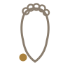

Gulpha Marma
The ankle
How to
Using your thumb and fingers, press into the soft hollows on either side of your ankle bone, just below where the bone protrudes. Hold, or move in small circles.
Benefits
- Useful for a stiff or tired ankle after standing or walking
- Simple to combine with slow ankle circles for added mobility
- Gentle enough to do daily, even with mild ankle stiffness
Practice
Press or circle for 30-45 seconds per ankle.
Get the Marma appFree, no ads, works offline
Google Play
General information, not medical advice. If you have a health condition or pain, talk to a doctor or qualified teacher first.